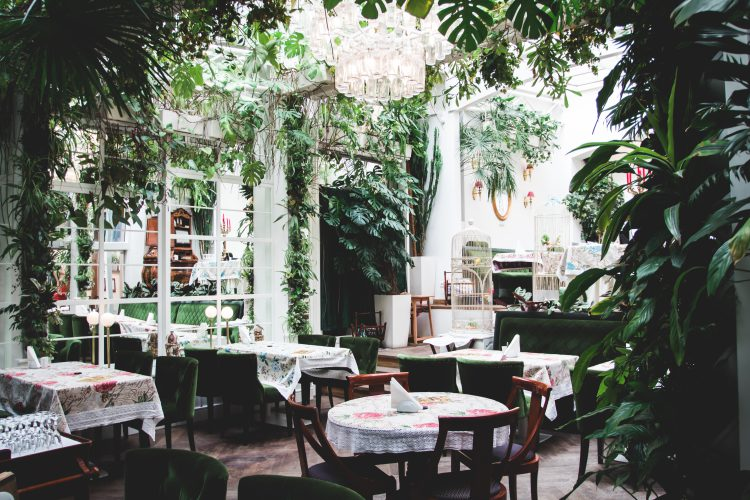
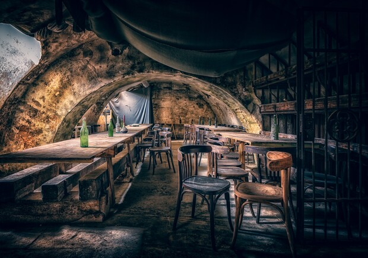
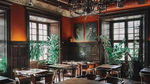

Ресторан Бачевських
Вишукана галицька кухня в атмосфері старого Львова.

Криївка
Тематика УПА з традиційними українськими стравами.

Mons Pius
М'ясні страви та широкий вибір пива в історичній будівлі.

Реберня 'Під Арсеналом'
Соковиті реберця, приготовані на відкритому вогні.

Амадеус
Європейська кухня в елегантній атмосфері.

Валентино
Італійська кухня з панорамним видом на місто.

Кулінарна студія 'Крива Липа'
Сучасна українська кухня в затишному інтер'єрі.

Green
Вегетаріанські та веганські страви в центрі міста.

Park. Art of Rest
Ресторан з літньою терасою та живою музикою.

Дім Легенд
Тематика львівських легенд з унікальним інтер'єром.